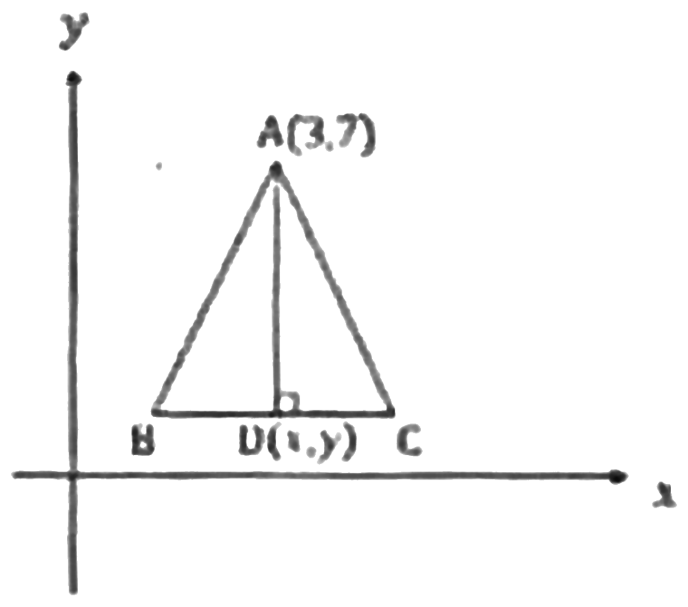

נתון: |6x + 6y| = |−2x − 2y|
מה מהבאים נכון בהכרח?
לאחר הנחה של 45 שקלים שילמה גיל x עבור נעליים חדשות שרכשה. מהו אחוז ההנחה אותו קיבלה גיל?

בסרטוט שלפניכם שני חצאי מעגלים בעלי מרכז משותף בנקודה O. רדיוסו של חצי המעגל המקווקו הוא 1 ס"מ. נתון: השטח המקווקו גדול פי 2 מהשטח הכהה⚠.
בהסתמך על נתונים אלו ונתוני הסרטוט, מהו סכום האורכים של שני הקווים המודגשים (בס"מ)?
x, y ו־z הם מספרים טבעיים השונים זה מזה. נתון: x³ · y⁴ · z = 25 · 63 · 65 · 99
x · y = ?
שני אוטובוסים נוסעים מתל אביב לירושלים הלוך ושוב החל מ־6:00 בבוקר ועד 21:00 ללא הפסקה. האוטובוס הראשון נוסע במהירות של 60 קמ"ש והאוטובוס השני נוסע במהירות 90 קמ"ש. אם המרחק בין תל אביב לירושלים הוא 90 ק"מ, כמה פעמים במהלך היום נפגשו האוטובוסים בתחנת המוצא בתל אביב?

בסרטוט שלפניכם משולש ABC. נתון: AD ⊥ BC.
לאור נתונים אלו ונתוני הסרטוט, מהם שיעורי ה־x של הנקודה D?
לכל מספר שלם וחיובי x הוגדרה הפעולה $ כך: $(x) = מספר הפעמים שהמספר הראשוני 2 מופיע בפירוק של x לגורמים ראשוניים⚠.
מה מהבאים נכון בהכרח?
עידן בחר מספר 3 ספרתי שכל ספרותיו זהות. לירון בחרה מספר הגדול ב־115 מהמספר שבחר עידן. ראם בחר מספר הגדול ב־1110 מהמספר שבחר עידן. אם נחלק את כל אחד מהמספרים הללו ב־15, מי מהם יניב את שארית החלוקה הגדולה ביותר?
⚠ "ב־5"/"ב־15" בסוף השאלה מטושטש.
נתון: a הוא מספר טבעי הגדול מ־1. x הוא מספר ראשוני. y = xᵃ
כמה מחלקים שונים יש ל־y?
בכמה מספרים תלת־ספרתיים ספרת המאות שווה למכפלה של ספרת האחדות בספרת העשרות?
הערה: זו אותה שאלה כמו מקבץ 20 שאלה 8.